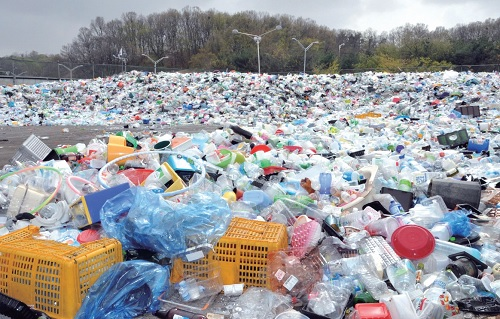
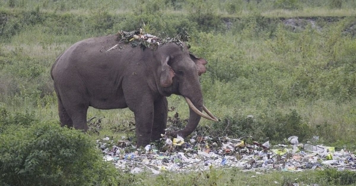
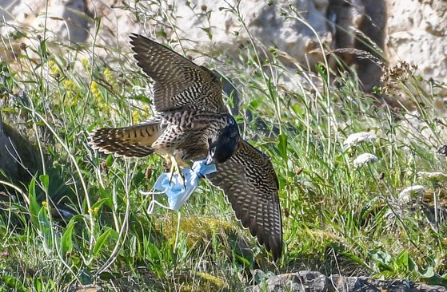
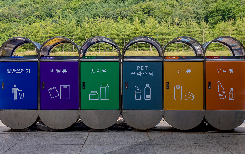
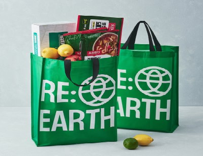

무분별한 쓰레기 투기

우리가 무분별하게 버린 쓰레기들은 야생동물들에게 그대로 노출되며 한편으로는 커다란 위협이 될 수도 있습니다.
쓰레기에 그대로 노출되는 코끼리와 사슴

인간들이 쓰레기를 무단으로 투기하는 가운데 야생동물들의 직접적인
피해가 우려를 증폭시키고 있습니다.
야생 동물들이 많이 사는 개발도상국의 경우 쓰레기 배출기준의 준수도
미흡한데다, 야생동물 보호책도 달리 마련되지 않아서 쓰레기로 인한
피해는 더더욱 커지고 있습니다.
코로나로 인한 방역 쓰레기

최근 전 세계적으로 코로나19가 대유행함에 따라 마스크등 방역
쓰레기들이 많이 생성되었는데
방역 쓰레기들을 무분별하게 버리는 사람들이 늘어남으로서
마스크를 먹이로 인식하고 한입에 삼켜서 죽는 야생동물들도 늘어나고
있습니다.
무분별한 쓰레기 투기로 인한 문제를 해결하기
위한 우리들의 노력
1. 쓰레기는 반드시 분리수거하기

쓰레기들 중 재활용품을 분리 배출하면 그만큼 쓰레기 양이
줄어듭니다.
쓰레기를 버리기 전 재활용 가능 여부를 확인하고 재활용품을 분리하여
배출합시다.
쓰레기를 줄이는 것은 자원을 절약하고 환경보전에 기여하는 일입니다.
2. 쇼핑할 때 장바구니 이용하기
